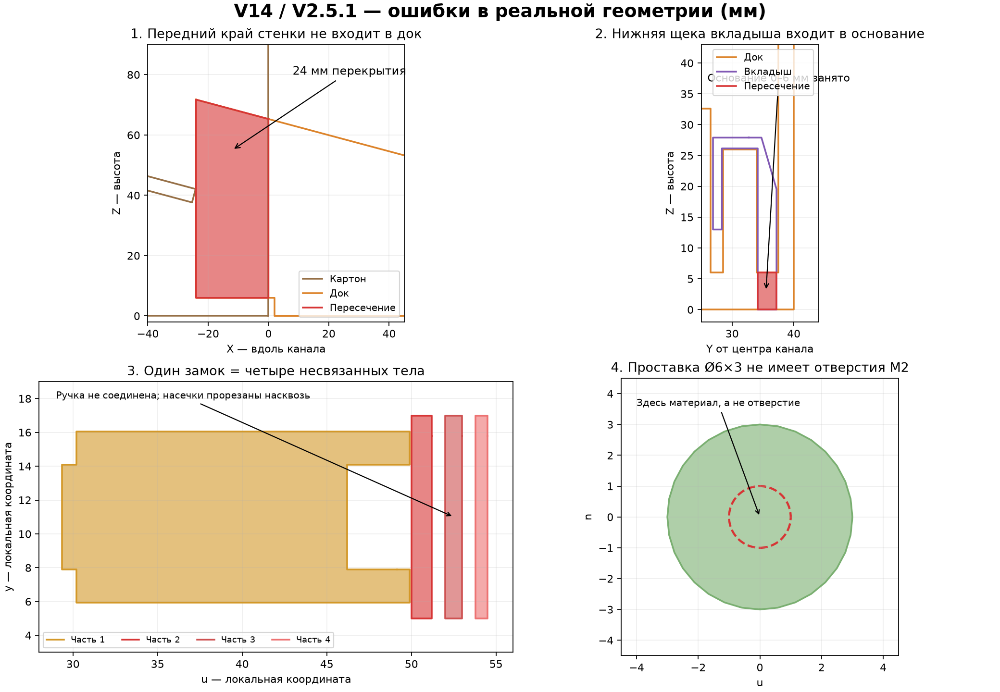

V14 / док V2.5.1: проверка перед печатью
30 сентября 2026. Проверена текущая версия файлов от 17:44. Это инженерный аудит, а не новая версия конструкции. Модели, STL, программа и прошивка не изменены.
Вердикт: полный комплект сейчас не печатать. Идея кассеты и двухстопорного дозатора жизнеспособна в расчёте, но сохранённая геометрия содержит ошибки, препятствующие штатной сборке. Они есть и в STL, и в 3D-просмотрщике. Даже тестовый канал содержит ошибочные посадки.
Что именно проверено
Исходная геометрия BX04, генератор make_dock_full_3d.py, сохранённые данные ДОЗАТОР_V14_ПОЛНЫЙ_3D.html, инструкция сборки, шесть файлов из ПЕЧАТЬ_ДОКА, макеты кассеты, параметры и фотографии предыдущей печати. Генератор исполнялся только до раздела экспорта — существующие результаты не перезаписывались.
Проверки: связность отдельных деталей, реальные объёмные пересечения, 113 положений механизма с шагом 0,5°, установка соединённых блоков сверху, 2114 положений банки при проходе между стенками/стойками, расчёт передачи удержания между стопорами, отдельная упрощённая контактная модель очереди. Цифровая проверка не заменяет испытание пластика и сервоприводов.
Четыре подтверждённые ошибки деталей
Открыть крупно реальные сечения деталей. Красный цвет показывает пересечение материалов либо отделённые фрагменты. Пунктир в проставке обозначает место требуемого отверстия, которого в файле нет.

Логика дозирования: что проходит расчёт
Для банки 67×Ø47 мм и расчётного хода коромысла −28…+28° второй стопор перехватывает очередь до освобождения первой банки. Основной принцип менять не требуется из-за найденных сборочных ошибок.
Независимая от анимации упрощённая модель с тягой 55,5 мм, плечом качалки 9 мм и заданным плавным циклом выдала по одной банке в очередях из 1, 3 и 10 банок Ø47; очереди по 10 банок Ø49 и Ø50 также прошли. Проверка полного контура коромысла по 188 выборочным кадрам для трёх Ø47 не выявила дополнительных пересечений с банками на скате.
Ограничения: модель контактная, с проекцией непроникновения, а не расчёт реальных ударных усилий. Она не учитывает верхний ярус, перекос, этикетки, люфты, деформацию картона, предел момента двигателя и реальные задержки электроники. Максимальная коррекция положения в очереди Ø47 — около 0,55 мм. Результат «по одной» — вычислительный, физических испытаний новой версии не было.
Качалка сервы и цифровая сборка не согласованы
Анимация использует отверстие тяги на радиусе 9 мм. Инструкция предлагает 10–13 мм. Это заметно разные передаточные отношения:
Это геометрические углы в системе модели, не готовые значения интерфейса ESP32. Нельзя считать, что произвольное отверстие из диапазона 10–13 мм и прежние настройки дадут расчётный ход. В новой сборке нужно зафиксировать фактическое плечо и откалибровать обе крайние позиции.
Также 3D-сборка оставляет тягу в старой плоскости Y = −5,1…−1,5 мм, но переносит качалку на Y = 2,3…6 мм и добавляет проставку на Y = 3…6 мм. В 19 из 113 положений тяга пересекает модель выходного вала сервы; максимум 17,94 мм³. Поэтому изображение расположения тяги/качалки/проставки не является надёжной сборочной инструкцией. Реальная серва и выбранная сторона установки требуют сверки. Это не доказательство неизбежного заклинивания правильно собранной физической головы, а подтверждение ошибки цифровой сборки.
Между новым держателем и рамой есть ещё небольшое пересечение 2,21 мм³ с высотой до 0,65 мм около X = 113 мм. Его нельзя выдавать за идеальную посадку без подгонки. Пересечение замка с рамой 1,01 мм³ находится в зоне предусмотренных фиксирующих выступов — отдельно оно не классифицировано как фатальная ошибка.
Проход банки и размеры кассеты
- Расчётная банка: 67×Ø47 мм. Канал между картонными стенками 75 мм при толщине картона 5 мм. Номинальный запас по длине банки — 8 мм суммарно.
- Банка 67×Ø47 проходит проверенный путь между печатными направляющими и стойками при боковом смещении ±2 мм и рассмотренных сочетаниях перекоса ±5°. Это геометрический проход, не доказательство отсутствия трения этикетки и шва.
- Обещанный универсальный запас до 72×Ø50 мм не подтверждён: пересечения появляются уже у центрированной банки около перехода к стойкам, а смещение и перекос усиливают их. Для твоей номинальной банки этого конфликта в данном тесте нет.
- Кассета: 590×405×390 мм; шесть стенок, пять каналов. Нижний ПНД-поддон 559,05×405×4 мм, 15°. Верхний — 516,85×405×4 мм, 10° в обратную сторону. У переднего стыка нижнего поддона и языка дока нет взаимного проникновения; высотная привязка совпадает.
- Фактический зазор верхнего поддона до внутренней поверхности задней стенки — 51 мм, не 56 мм: в подписи потеряна толщина задней стенки 5 мм. Запас для Ø47 — только 4 мм; для Ø50 — 1 мм. Переход между ярусами требует отдельного испытания с реальной задней стенкой и загруженной нижней очередью.
- У нижнего заднего края зазор до внутренней поверхности — 20 мм, не 25 мм. Это меньше диаметра банки, но не само по себе ошибка: банка не должна проваливаться за нижний лист.
- Картон в расчёте 5 мм, купленный Т23С по обсуждению около 4 мм. Фактическая толщина ещё требует замера. Сочетание вкладышей 2,8+1,8 даёт щель 4,6 мм, но найденное пересечение вкладышей с доком сначала должно быть устранено. Задние полупазы 5,6 мм и клипса с раскрытием 10,8 мм будут свободнее при картоне 4 мм.
Печатные файлы и сборка блоков
Все шесть файлов имеют замкнутые поверхности. Это подтверждает пригодность сеток для чтения слайсером, но не правильность конструкции. В частности, четыре отдельных куска замка тоже каждый по себе «замкнуты».
Геометрия основного блока в сохранённом STL совпала с построенным телом после переноса в печатные координаты: симметрическая объёмная разность 0 в используемом булевом расчёте, разность объёмов около 0,004 мм³ от точности чисел. Следовательно, конфликт не исчезает при переходе от генератора к печатному файлу.
Сборка блоков сверху геометрически возможна в правильном порядке: сначала блок со шипом, затем следующий блок с пазом опускается на него. Проверено для слитных двухканальных блоков при вертикальных смещениях от 0 до 120 мм. Обратный порядок с опусканием шипа в уже стоящий закрытый паз ограничен стенкой над пазом. Это требование порядка сборки, а не причина отвергать весь тип соединения.
Втулка B404: наружный рабочий Ø6, отверстие Ø3,4, бурт Ø8, общая длина 23 мм. Коромысло имеет отверстие Ø6,3, держатель Ø6,2. Номинальные диаметральные зазоры 0,3 и 0,2 мм разумны как отправная точка, но реальную посадку Ender/PLA проверяют печатью; запасных калибров других диаметров в текущем листе №4 нет.
Самонесущий скос стоек не устраняет длинный мост балки около 60 мм. На прошлых фото он провисал. Заявление «весь комплект без поддержек и подгонки» не подтверждено новым слайсингом и печатью. Предполагаемые 57 часов в README не пересчитаны мной; после возвращения направляющих расход и время следует взять из OrcaSlicer, не из старой таблицы.
Почему анимация не является испытанием
В просмотрщике банка принудительно переводится в состояние выдачи при q>10°, а оставшаяся очередь вручную передвигается в заданные координаты. Столкновения со стенками не рассчитываются. Для Ø47 реальное геометрическое освобождение получается около +11,16°.
В коде осталась точка перехода к падению X=140 мм при фактическом конце жёлоба X=165 мм, и используется старая высота пола. Визуальная банка также имеет длину 63,5 мм, а не 67 мм: цилиндр корпуса 60 мм и крышка 7 мм перекрываются на 3,5 мм. На анимацию нельзя опираться для подтверждения запаса по длине банки.
Просмотрщик показывает пять отдельных моноблоков, тогда как листы №1 и №2 содержат слитные двухканальные блоки без внутренних ласточкиных соединений. Это ещё одно различие между сценой и фактической печатью. Сравнение именно печатных STL в этом аудите выполнено отдельно.
Сервы, питание и отключение
Выбранные MG996R подходят по классу привода; расчётный статический момент исходной нижней очереди из десяти банок по 45 г составляет ориентировочно 0,23 кгс·см при исходном плече 9 мм. Это оценка без ударов, трения шарниров и реакции верхнего яруса, не ресурсная гарантия.
У оригинального MG996R производитель указывает 9,4 кгс·см при 4,8 В, 11 кгс·см при 6 В и ток остановленного двигателя 1,4 А. Поэтому пять одновременно заклиненных оригинальных приводов дают около 7 А — надпись «4–5 А на пять серв» не гарантирует питание во всех режимах. Для дешёвых экземпляров фактические характеристики нужно измерять. Источник: официальная страница TowerPro MG996R.
Проверенный локальный софт организует производственную выдачу последовательно и рассчитывает время POWERMAX под цикл; это полезно для ограничения общей нагрузки. Его и калибровки я не менял. Расчёт кинематики не устанавливает самоторможение механизма без питания: необходимо проверить, держит ли загруженную очередь выключенная серва и не меняется ли HOME после снятия PWM/питания.
Условия готовности после исправления файлов
- Устранить четыре подтверждённые ошибки деталей и согласовать плечо качалки с цифровой сборкой. Исправления в рамках этого аудита не внесены.
- Повторить проверки фактических STL: кассета/док, вкладыши/док, связность замка, отверстия проставок, положение тяги, посадка держателя.
- Сначала напечатать обновлённый один канал с головными деталями и примерить реальные картон и ПНД. Без банки вручную проверить свободный ход шарниров; серву включать только с безопасной калибровкой.
- Проверить одну банку, затем полную нижнюю очередь, переход с верхнего яруса и последнюю банку. Предложенный приёмочный минимум — 200 последовательных выдач на канале без двойной выдачи/заклинивания плюс проверки отключения и повторного включения под загрузкой. Даже это ещё не доказывает многомесячный ресурс.
- После этого разрешать печать оставшихся больших блоков. Расширение на другие размеры банок и одновременную работу пяти серв — отдельная проверка, не автоматическое следствие успешного одного канала.
Итог
Сохранять идею и механизм разумно. Считать текущий комплект «готовым, ничего доделывать не надо» — нет. Основные препятствия сейчас в цифровых посадках и подготовке деталей, а не в необходимости менять всю концепцию. Для физической надёжности после их устранения всё равно нужен тест одного собранного канала.
Контрольные суммы проверенной версии
make_dock_full_3d.py
D0C9FB63454A0FED644EFC1FBB6D5CC022E91E1000356335DB14C0CD94CDE2AB
Лист 1
2A5D59B185C49F5F80F0DB06CC487B8767D097747EE18B02D6AAD39E09D11579
Лист 4
28E04EBB5054FCFA85BD2D39AB839560A0EFAC1A7F94F3D1858C1071347D91FA
Браузерное подключение в этой сессии недоступно: новое интерактивное открытие сцены не выполнено. Просмотрены сохранённый снимок актуальной 3D-сцены и фото; независимые проверки выполнены непосредственно на геометрии. Этот отчёт работает офлайн, без JavaScript и внешних библиотек.